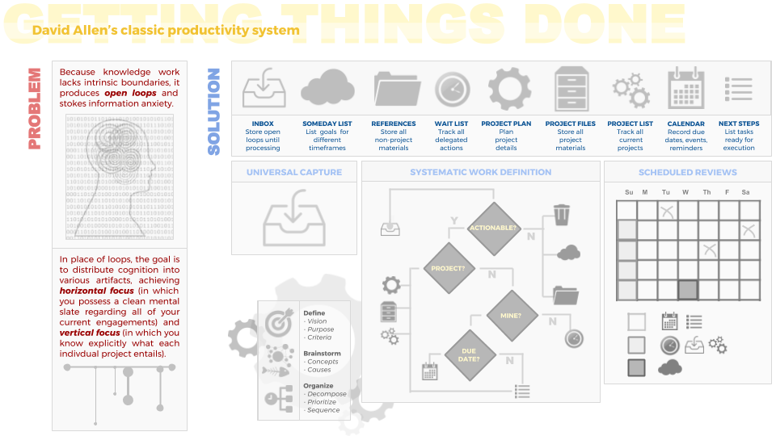

June 17, 2017
This is a graphic summary of David Allen's Getting Things Done methodology. It's more of a reference than a standalone explanation, so it might be a little cryptic if you haven't read the book (try the WikiSummary for an overview).
In addition to Allen's methodology, I liked his argument that we don't manage, i.e. control, time (which is finite) nor do we manage information (which is infinite). Rather, we control our actions. It's easy to feel overwhelmed by the relentless influx of information and evaporation of time, but this anxiety is resolved (and progress is made) by taking action, not by fixating on time and information per se.
Allen handles time management by way of a 'next actions' backlog. The backlog ensures that, at any moment, the question "What should I do next?" can be answered without expending much decision-making energy; contrast this with other approaches to productivity that focus explicitly on budgeting time.
Similarly, Allen avoids the details of information management and merely clarifies the role of information in relation to productivity. Information is the residual, what's preserved for the sake of reference once actions are extracted. While references must be managed in some fashion, Allen proposes a system of hardcopy folders and files only in the spirit of helpfulness, noting that implementation can vary significantly without undermining the essence of the GTD system.
Click to enlarge:
{kind=link}